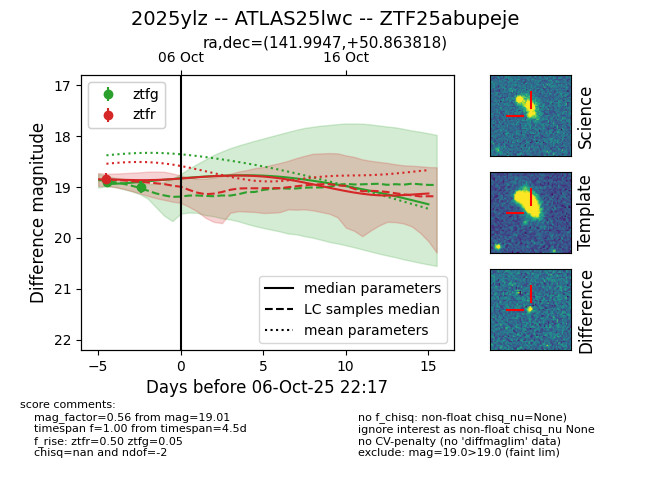
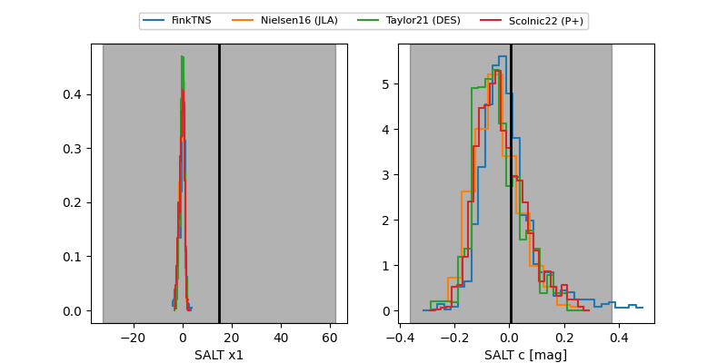

FINK: ZTF25abupeje
Lasair: ZTF25abupeje
ALeRCE: ZTF25abupeje
TNS: 2025ylz
YSE: 2025ylz
ZTF25abupeje (ztf,fink)
2025ylz (tns,yse)
ATLAS25lwc (atlas)
equatorial (ra, dec) = (141.9947,+50.86382)
galactic (l, b) = (166.8357,+45.09028)


last ztfg=19.01, ztfr=18.83
2 ztfg, 1 ztfr detections